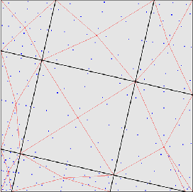

Next: Weak formulation Up: Face-to-Face Penalty Contact Previous: Face-to-Face Penalty Contact Contents
|  |
In the face-to-face penalty contact formulation the spring element which was described in the previous section is now applied between an integration point of a slave face and a master face (spring in Figure 133). The contact force at the integration point is subsequently transferred to the nodes of the slave face. This results in contact spring elements connecting a slave face with a master face (full lines in Figure 133). The integration points in the slave faces are not the ordinary Gauss points. Instead, the master and slave mesh are put on top of each other, the common areas, which are polygons (sides of quadratic elements are approximated by piecewise linear lines), are identified and triangulated. For each triangle a 7-node scheme is used (Figure 134). This can result to up to 100 or more integration points within one slave face. It usually leads to a very smooth pressure distribution. Furthermore, it is now irrelevant which side is defined as master and which as slave. In the present formulation the following approximations are used:
Due to the freezing of the match between the slave and master surface within each increment, large deformations of the structure may require small increments.
The contact definition in the input deck is similar to the node-to-face penalty contact except for:
In addition, a new pressure-overclosure relationship is introduced with the
name TIED. It can be used to tie surfaces and usually leads to a significantly
smoother stress distribution than the MPC's generated by the *TIE option. For
the TIED pressure-overclosure relation only two parameters are used: the
spring stiffness  (
( , required), and the stick slope
, required), and the stick slope  (
( ,
optional). The friction coefficient is irrelevant.
,
optional). The friction coefficient is irrelevant.